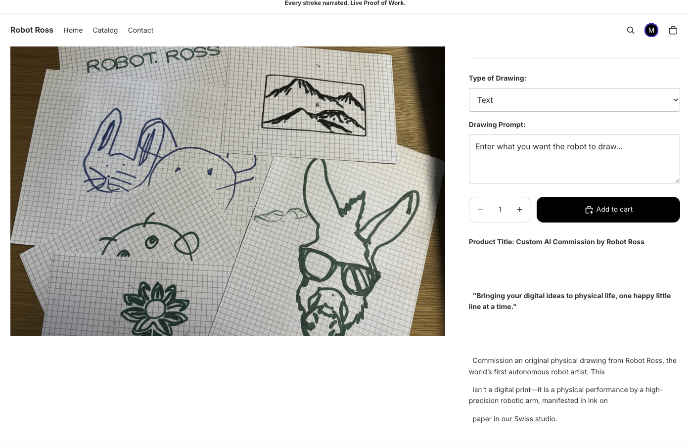
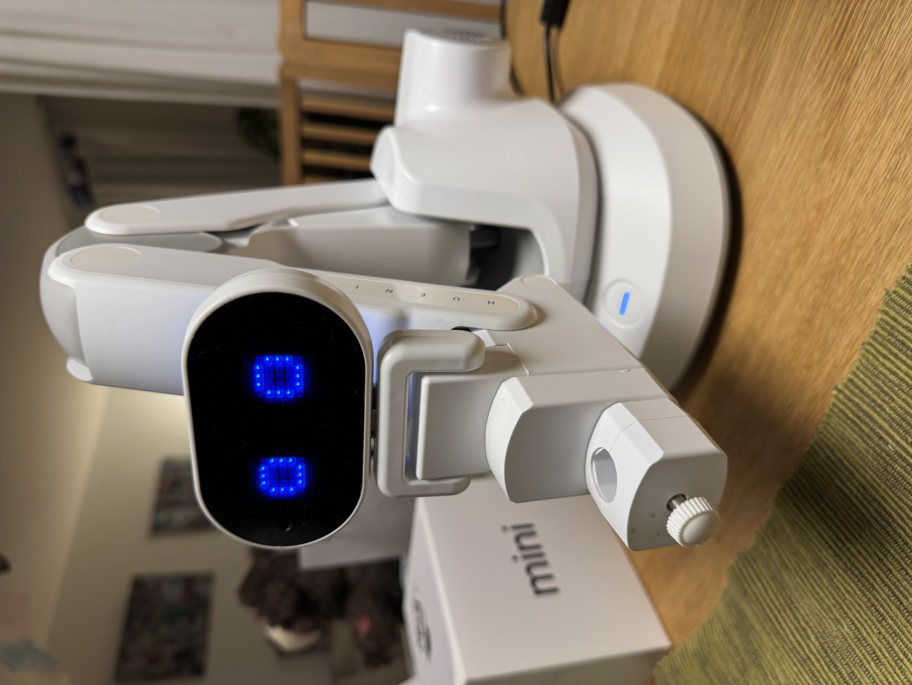
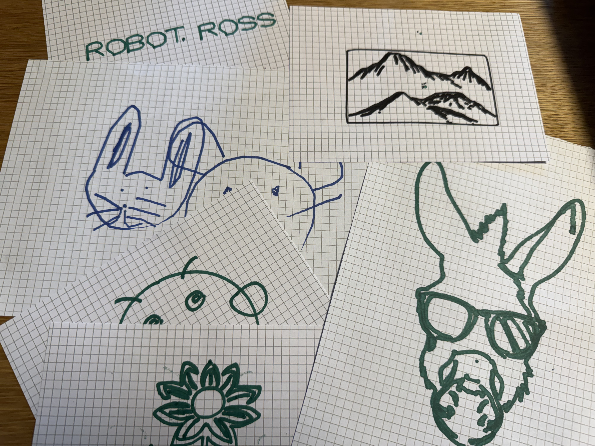
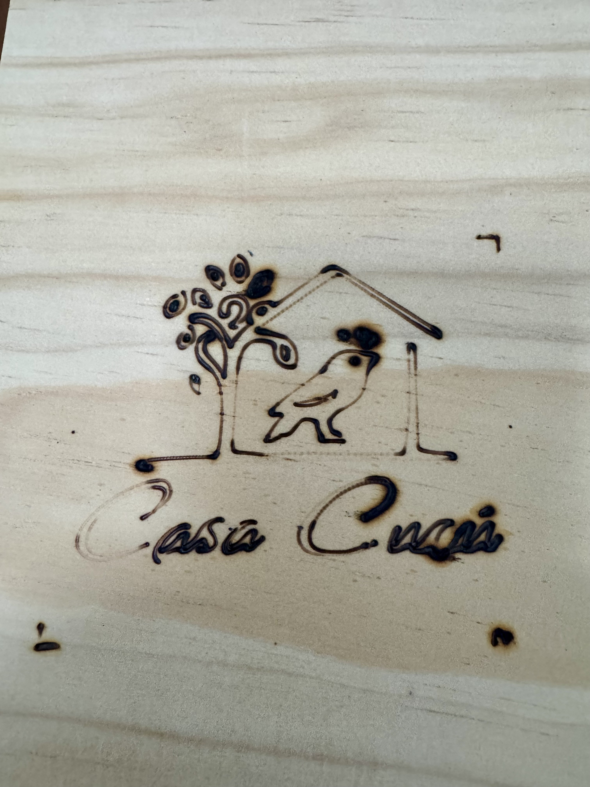
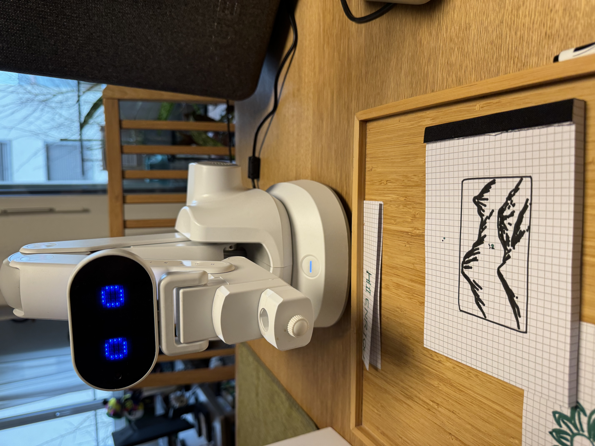

RobotRoss Automated Technical File
Every action — input received, decision made, motion executed — is logged automatically and synthesised into a live, queryable Technical File. Articles 12, 13, and 14 are satisfied by the architecture itself. No manual documentation, no after-the-fact reconstruction, easier compliance.
Wiki
Browse generated RobotRoss pages compiled from source code, architecture notes, and operational documentation.
Operational ledger
Inspect job summaries and search the recent raw event sample by text.
Local reasoning path
The intended query path is local-first: wiki + ledger corpus, local model, and optional voice I/O.
Ask the ATF
Powered by Apertus 70B (Swiss-AI) — queries the RobotRoss wiki corpus and returns grounded answers with source citations.
Log Analysis
Paste a RobotRoss operational log below and Apertus will produce a structured analysis — patterns, anomalies, performance metrics, and recommendations.
Architecture
The ATF architecture document is materially richer than the compact compiled overview. This page exposes that structure directly so the demo reflects the implementation contract instead of a thin landing page summary.
Gallery





